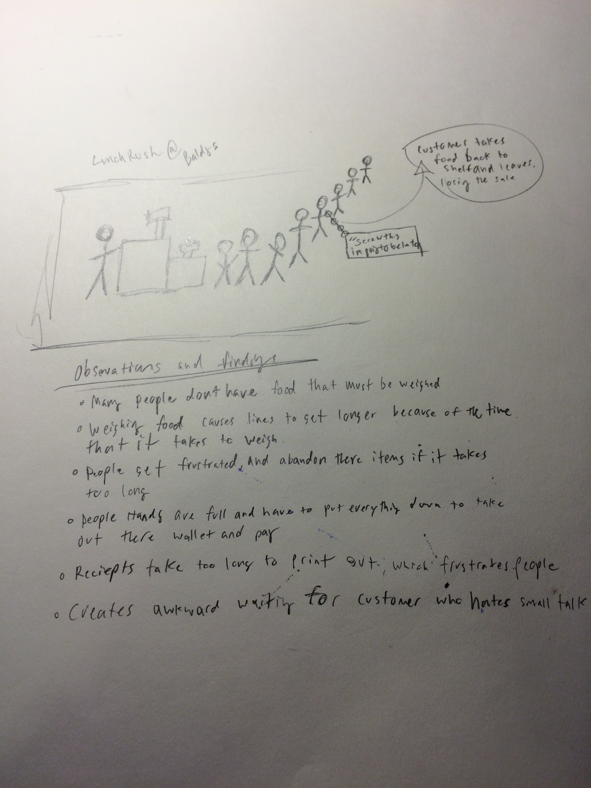
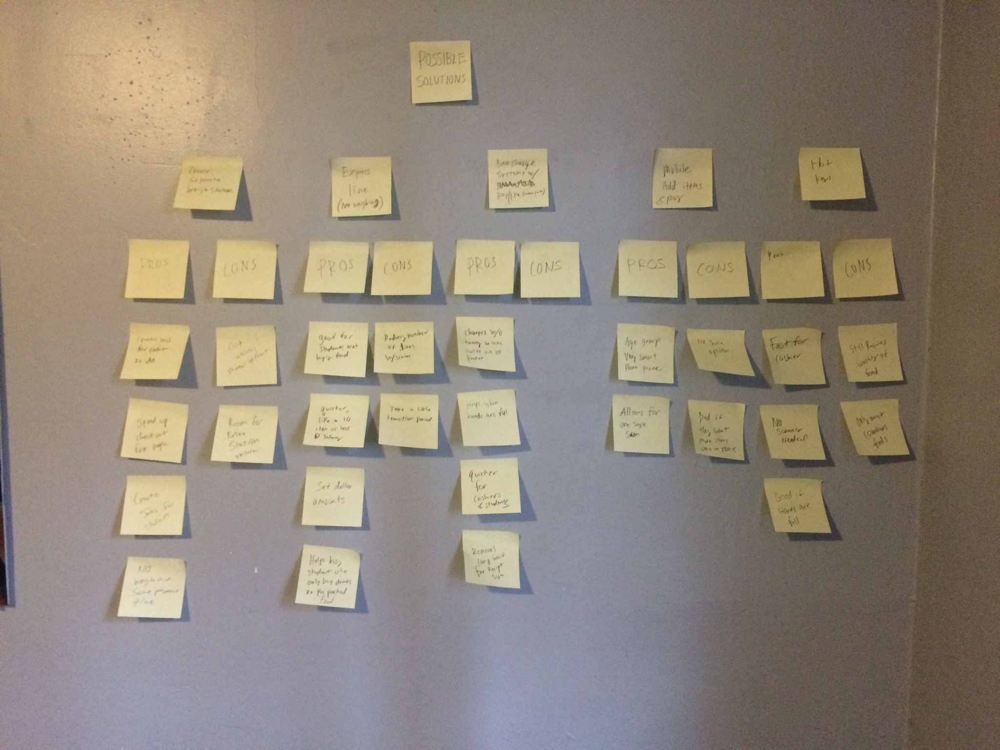
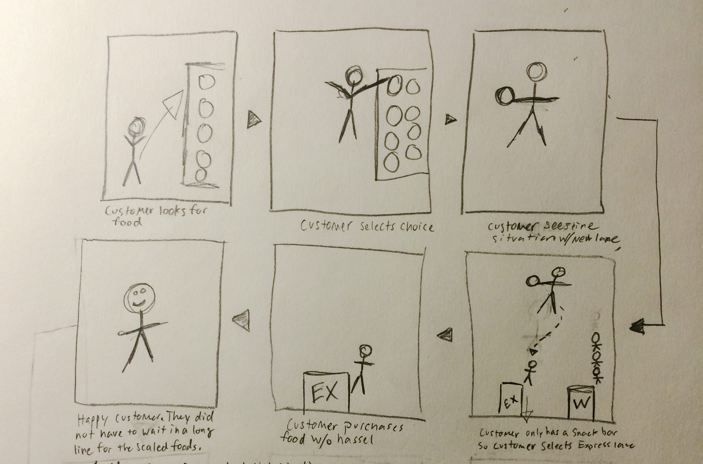
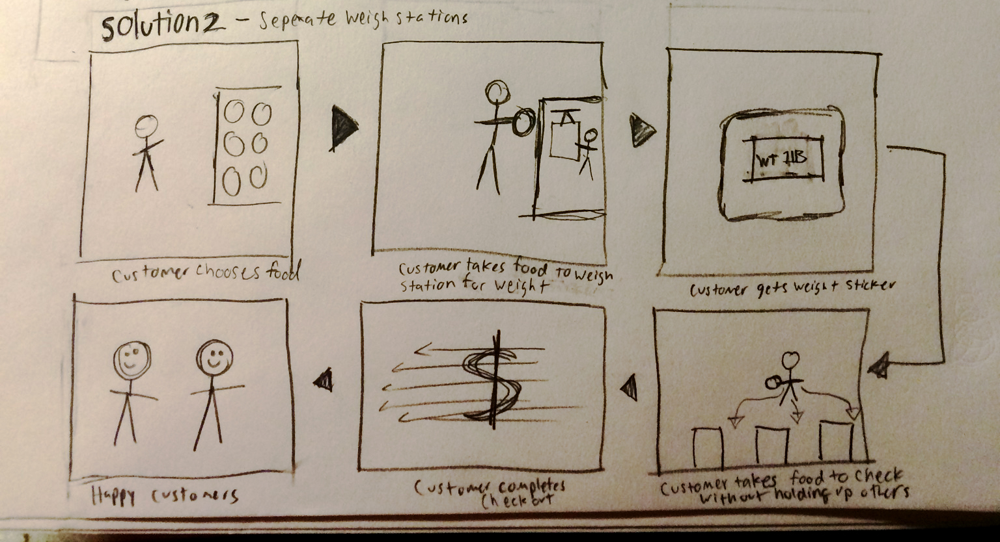

WEEK 1 - Checkout Experience
PROBLEM: Baldy's checkout becomes painfully slow during lunch hours.

A Few Findings
- I went through the checkout process to discover that the lines really back up one of the reasons I had found this to be true was the fast that many customers had to weigh their food at the checkout creating extra time.
- I noticed was that many people do not have food that required it to be weighed on a scale.
- Receipts take a long time to print out becuase of slow credit card machines
- Long waits often lead customers with few items, to put there items back
Reasearch
One of the biggest themes found through reasearch was that the checkout process should be easy, quick, and simple. Peoples time is very valuable in our fast passed world.
60% of people abandon their purchases because of a bad customer experience
Customers do not like unexpected costs at the register.
Brainstorming
Solution 1 - Express Lane for people who don't need to have food weighed
The express lane would allow for customers without food items that require weighing to go to a faster line. This would both reduce line sizes, and would speed up checkout.
Solution 2 - Seperate weigh station
Creating seperate weigh statation would improve the flow of speed of checkout lines. Customers that need to have food weighed would be able to do so before checkout. A bar code would be given to them. This would speed up lines at checkout.
